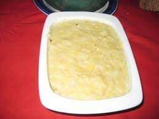

Mozambican Mucapata

Photo description: Mucapata served and ready to be eat
Mucapata is a typical dish from Zambézia (province in Mozambique), essentially prepared with rice, soroco beans and coconut.
Shall we learn to prepare?
Ingredients you will need
- 1kg of rice
- 500 g of soroco beans
- 3 coconuts
- 1 liter of water
- 1 teaspoon of salt
How to prepare Mucapata?
- Wash the rice and hulled soybeans.
- Both are put to cook in a pan with a liter of water and salt, for twenty minutes.
- The coconuts are grated; heat a little water (warm) and squeeze the milk.
- Add the milk to the previous preparation.
- Leave on the heat until the beans are cooked and the sauce is dry.
- It's ready to serve.
- It can be served with grilled chicken or cabidela rice.
- This dish is best cooked in a clay pot.
Thats it!! I hope you enjoyed it